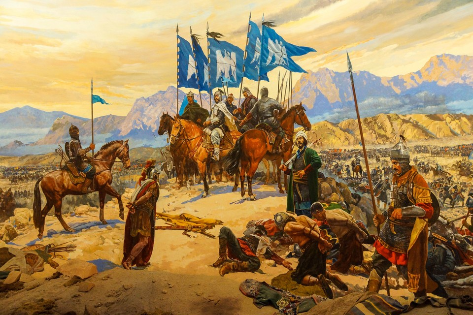
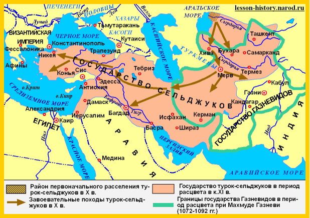
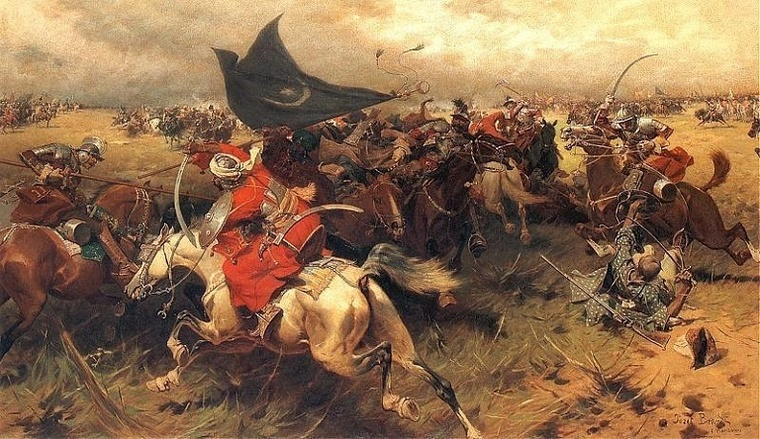
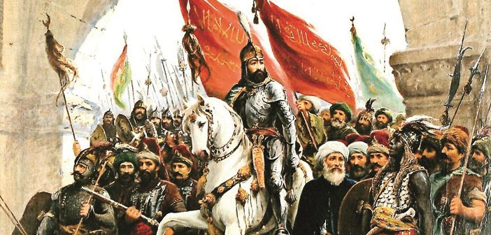
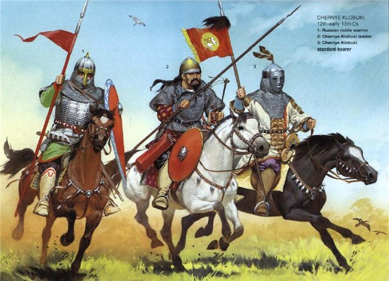

Сельджуки, потомки огузов, огузы потомки узов-гузов.
Что известно о сельджуках и их связи с Огузами, узами-гузами?
Кто такие сельджуки?
«Сельджу́к (тур. Selçuk Bey Сельчу́к-бей), — Сельджук ибн Дукак (Токак), или Малик ал-Гази («Султан газиев» получил это прозвище сражаясь с язычниками) — глава тюркского огузского племени кынык, эпоним династии Сельджукидов.
Отцом Сельджука был Токак, происходивший из рода Тугшермыша огузского родового племени Кынык. Токак находился на военной службе у ябгу или (йабгу) Али правителя Дженда. Имя «Токак» означает означает “Железная стрела”. Есть сведения, что его сын Сельджук начинал свою военную карьеру командиром в войсках Хазарского каганата. Позже после ослабления власти кагана в середине X века вместе с отцом перешел на службу к огузам.

Ему было не более 20 лет, когда он стал сю-баши у огузского ябгу. По легенде, жена ябгу, видя в Сельджуке опасного соперника, подговаривала мужа убить его. Узнав об этом заговоре, Сельджук собрал всех людей своего племени Кынык и с сотней всадников переселился под предлогом поиска новых пастбищ из Турана, страны огузов, в Иран. Это случилось в 985 или 986 году. Прожил, по преданию, 107 лет и умер в Дженде. Сельджук оставил после себя пятерых сыновей. Внуки Сельджука стали выдающимися полководцами Халифата: Тогрул-бек, Чагры-бек Дауд, Алп-Арслан. Впоследствии, захватив Месопотамию, Ирак, Сирию и большую часть Ирана они создали огромную империю и стали основателями династии Сельджукидов, правившей этими землями с XI по XIV века».
Есть необходимость выделить некоторые интересные эпизоды истории сельджуков и дать пояснения. Турки гордятся своими легендарными предками, сельджуками. Давайте же ещё раз вспомним, откуда они взялись, и какое отношение имеют к современным туркам.
«По версии официальной Турции почти полтора тысячелетия назад, в VI веке, в Евразии образовался Великий Тюркский каганат, огромная территория которого тянулась от границ Китая до Северного Причерноморья. Основное его население составляли тюркские племена, известные еще со времен другой великой державы – гуннов. Но Тюркский каганат со временем тоже распался, и судьба населявших его племен сложилась по-разному. Так, северная ветвь, известная как “кыпчаки” (“кипчаки” или половцы в русской исторической традиции), оказала сильное влияние на формирование этнокультурного облика многих тюркских народов, в частности – татар, башкир, казахов, узбеков, ногайцев».

Другая ветвь тюрков, южная, получила название “огузов”, занимавших в VII-XI веках значительные территории в Центральной и Средней Азии. Возникает вопрос, там были только огузы или в числе многих племён были узы? Не вникая в подробности исторических событий того периода, скажем лишь, что это название стало постепенно чередоваться с другим – этнонимом “туркмены”. Огузы-туркмены были в основном кочевниками, и среди их различных группировок шла постоянная борьба за лучшие земли, воду и пастбища. В других множественных источниках переданы сообщения о том, что узы всегда занимали самые лучшие места. К концу X века выделилась одна из ветвей тюрко-огузских племён, которую возглавил Сельджук ибн Тугак из племени кынык. Он объединил под своей властью часть местных племён, которые и стали называться “сельджуками”, а династия правителей, идущая от самого Сельджука, вошла в историю как Сельджукиды.
«Сельджуки приняли Ислам, что способствовало их дальнейшей консолидации. В XI веке они вышли за пределы своих пастбищ и приступили к созданию государственного объединения, ставшего известным как держава Сельджукидов. Ее основателем и первым правителем (с 1038 года) считается Мухаммад Тогрул-бек, внук Сельджука ибн Тугака, принявший затем титул султана. Решающее значение для утверждения этой державы имела ее победа над войсками Газневидской державы – сильнейшего государства того времени в регионе. Она открыла путь сельджукам на территорию Афганистана, Персии и Ирака. Впереди была Малая Азия, входившая в то время в состав Византийской империи. Как бы то ни было, завоевания сельджуков способствовали уничтожению феодальной раздробленности в захваченных ими странах.

В 1042 году Тогрул-бек направил 10-тысячную конницу в Восточную Анатолию, находившуюся тогда под властью династии Марванидов. Затем настала очередь Закавказья – Грузии, Армении, Азербайджана. Начались рейды сельджуков в пределы Византии, и под натиском их войск пали Эрзурум (Арзрум), Карс, Малатья (ныне это административные центры одноименных областей – илей Турции).
Между тем ими был взят Багдад, столица Аббасидского халифата, и Тогрул-бек перенес свою столицу из среднеазиатского Мерва в персидский Исфахан. Он объявил себя защитником халифа, а тот, в свою очередь, присвоил Тогрул-беку титул “малик (т.е. царь) Востока и Запада”. В 1062 году он сам во главе большой армии появился в Азербайджане, и тут следует уточнить, что с сельджуками (и в более широком смысле – с огузами) оказалась связанной и этническая история азербайджанского народа.

Держава Сельджукидов еще более усилилась в период 10-летнего правления султана Алп Арслана, любимого племянника Тогрул-бека. При нем в огромном регионе возрождались города, развивалось сельское хозяйство и ремесла, оживилась торговля на знаменитом Шелковом пути, связывавшем азиатские рынки с Ближним Востоком и Европой. Происходили и другие важные изменения в жизни народов, входивших в состав державы Сельджукидов. Продвижение на запад касалось не только войск, но и вызывало настоящую миграцию огузо-туркменских племен. Они отправлялись в дальний путь со своими семьями, табунами лошадей и верблюдов, стадами овец. Как писал один из историков, туркмены под именами “данышменди”, “ак-коюнлу”, “сельджук” проникали вплоть до Анатолии. И здесь они зачастую оседали, постепенно забывая о кочевом образе жизни и налаживая определенные отношения с местными жителями.
А военные действия продолжались. Султанская армия Алп Арслана предприняла новые походы в Закавказье и Малую Азию. В результате битвы под Манцикертом в 1071 году огромная византийская армия была полностью разгромлена, а в плен к сельджукам попал сам император Византии Роман IV Диоген. Эта победа открыла им путь в глубь Малой Азии. В руках Сельджукидов, помимо ранее завоеванных ими городов, оказались также Мардин, Мараш, Кайсери, а также Конья. Здесь ими был образован Конийский (Иконийский, Румский) султанат – первое государство сельджуков на территории современной Турции (1077-1307).

Однако не все шло гладко в их державе. Помимо вечных социально-экономических противоречий в обществе и внутриполитической борьбы среди членов правящего клана существовали и внешние угрозы. Особое давление Сельджукиды испытывали на восточных и северных границах своей державы. Здесь, с одной стороны, оживились Газневиды, с другой – угрожали кыпчаки, а также обделенные благами другие огузские племена и группировки. Часть из них двинулась вдоль северного побережья Каспия, а другая дала настоящий бой султанской армии. И во время одного из сражений под Бухарой в 1072 году погиб сам султан Алп Арслан.
Султанский трон перешел по наследству его сыну Маликшаху, 20-летнее правление которого было названо “весной Сельджукской династии”. Действительно, оно явилось периодом наивысшего могущества этой державы. Для того чтобы упорядочить бюрократический аппарат огромного государства, Маликшах и его знаменитый визирь Низам ал-Мулк (“Устроитель державы”) провели административную реорганизацию и ряд других важных реформ. Еще дальше расширились его границы, были завоеваны Сирия и Палестина, заняты священные города мусульман Мекка и Медина, а политическое влияние Сельджукидов распространилось вплоть до Египта.
Тем временем продолжалась активная колонизация Анатолии, куда в большом количестве продолжали переселяться огузы-туркмены. Они начали уже создавать самостоятельные княжества. А в конце 70-х годов обособился от центральной власти Конийский султанат, где правил Сулайман ибн Кутулмыш, один из родственников Маликшаха. Пользуясь ослабленностью императорской власти в Византии, он даже захватил Никею (ныне Изник) и вышел к побережью Мраморного моря.
Но сельджуков ждали новые испытания. В конце XI века начались крестовые походы, приведшие в 1204 году к падению и разграблению крестоносцами Константинополя. Но еще раньше, в 1097 году, они отобрали у сельджуков Никею и завоевали часть Конийского султаната. Еще большая угроза обозначилась на восточных границах державы Сельджукидов. Там вновь активизировались непокорные племена, нарастали внутренние противоречия в самой державе, и, в конце концов, в XII веке она распалась на независимые султанаты: Хорасанский, Иракский, Конийский, а в Средней Азии образовался Восточно-Сельджукский султанат.
Затем, уже в XIII веке, непоправимый удар по осколкам былой державы нанесли монголы. Что касается Конийского султаната, то в 1243 году он стал вассалом ильханов – монгольских правителей в Иране. А в 1307 году этот первый султанат сельджуков распался на ряд мелких княжеств – бейлики. Одно из них стало ядром будущего Османского государства».
Но это уже другая история, которая представлена красиво и правильно. Всё изложенное достаточно четко поясняет лишь одну сторону, разворачивая её в пользу Турции и это конечно хорошо. При этом возникает вопрос, где в это время были узы, предки гузов – гагаузов? Почему их история по сравнению с другими очень скудна? Их способности в воинском искусстве были не менее значительны, чем у тех огузов, которые стали сначала сельджуками, а позже и турками. Есть над чем подумать…
Спасибо Большое За Внимание! 🤝
Мамедов Малик - Создатель Этого Сайта